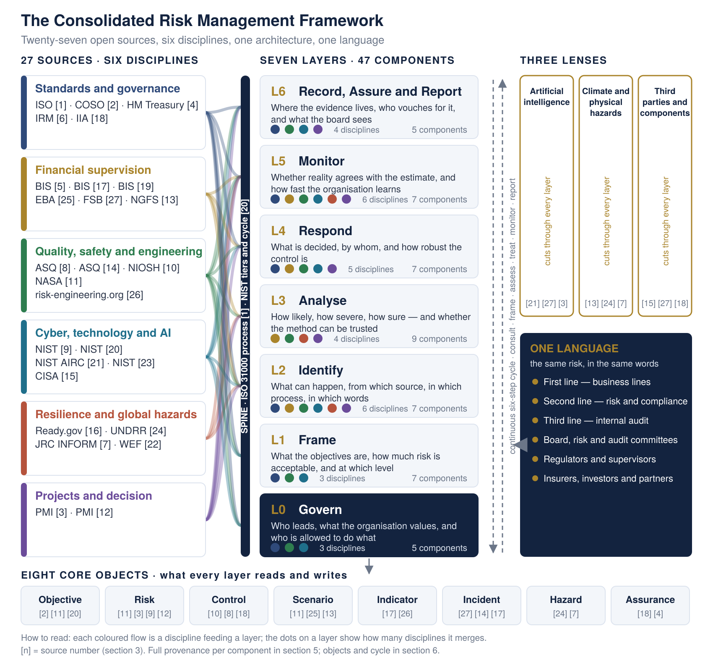

The framework in one picture
One spine, seven layers, forty-seven components, three lenses, eight objects and one cycle. This page says what each of those words means and where to go next.


One spine
The framework has one spine and it is not the framework's own. Every one of the twenty-seven sources fits on the six steps of the ISO 31000 process [1]: the four components of the information-security cycle, the five of the enterprise framework, the aerospace program's continuous risk management, the supervisor's stress cycle, the auditor's engagement. A consolidation that invented a process of its own would ask every adopter to translate twice. So the framework borrows the most general process in the set and adds nothing to it; the layers are the steps of that process, renamed as layers because each is a place where components accumulate rather than a moment that passes.
Seven layers, forty-seven components
Each layer answers one question, and the question is the quickest way to remember what the layer is for. Govern has no step of its own: it is drawn around the other six because governance decides that the cycle runs, who owns each turn of it, and what the people inside it may not do. A component is the unit of adoption: it has a code, a name, a specification written so that an auditor can test it and a developer can build it, and a provenance that names the source or sources it came from. An organisation adopts components, not layers; the layers are how the components are shelved.
Where the evidence lives, who vouches for it, and what the board sees5 componentsL5Monitor
Whether reality agrees with the estimate, and how fast the organisation learns7 componentsL4Respond
What is decided, by whom, and how robust the control is7 componentsL3Analyze
How likely, how severe, how sure, and whether the method can be trusted9 componentsL2Identify
What can happen, from which source, in which process, in which words7 componentsL1Frame
What the objectives are, how much risk is acceptable, and at which level7 componentsL0Govern
Who leads, what the organisation values, and who is allowed to do what5 components
Three lenses
Three subjects refused to sit in one layer: artificial intelligence; climate and physical hazards; third parties and the components they supply. Each is at once a risk, a body of controls and a vocabulary. A lens enters the stack at several layers and is read through all of them at once. The three lenses →
Eight objects
At the base sit the eight objects every layer reads and writes: the objective, the risk stated as a scenario, the control, the scenario in its stress, reverse and climate forms, the indicator, the event in its three kinds, the hazard, and the assurance activity. A risk is identified in L2, analysed in L3, responded to in L4, monitored in L5 and recorded in L6, and it is the same risk throughout. The eight objects →
One cycle
Around the outside runs the operating cycle, six steps, and the first is communicate and consult: the step the standard draws as a ribbon and on which no source sits. Then scope, context and criteria (Frame); risk assessment (Identify and Analyze); treatment (Respond); monitoring and review (Monitor); recording and reporting (Record, Assure and Report). Govern runs around the whole turn and is not a step.
Seven rules of construction
The framework was built under seven principles, stated in chapter 3 of the book with the source that taught each. The seven principles →